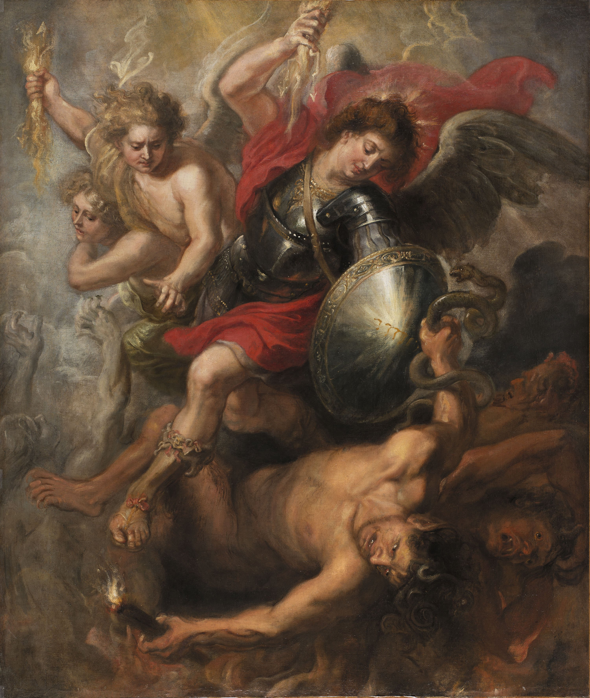
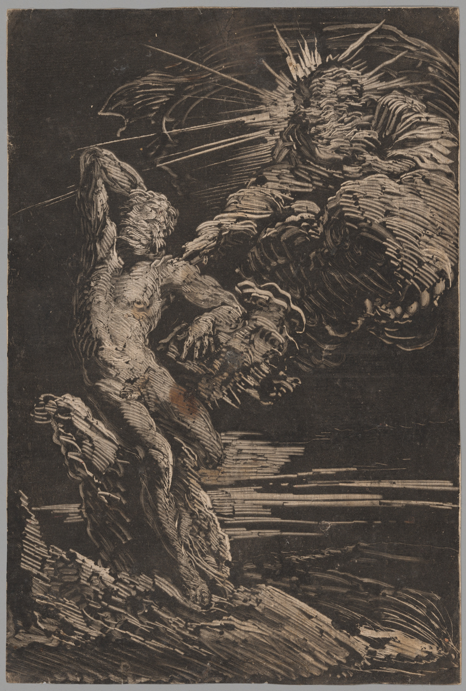
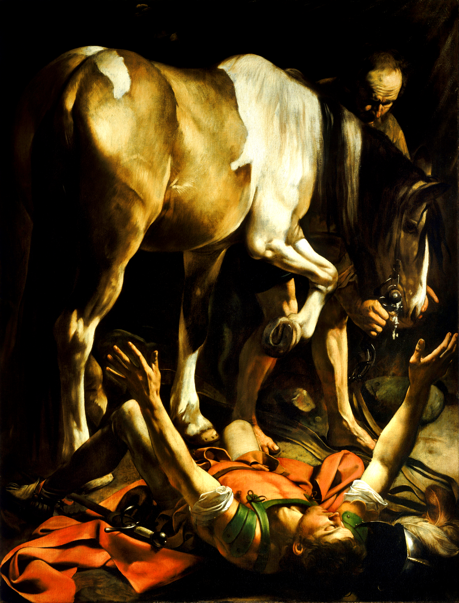
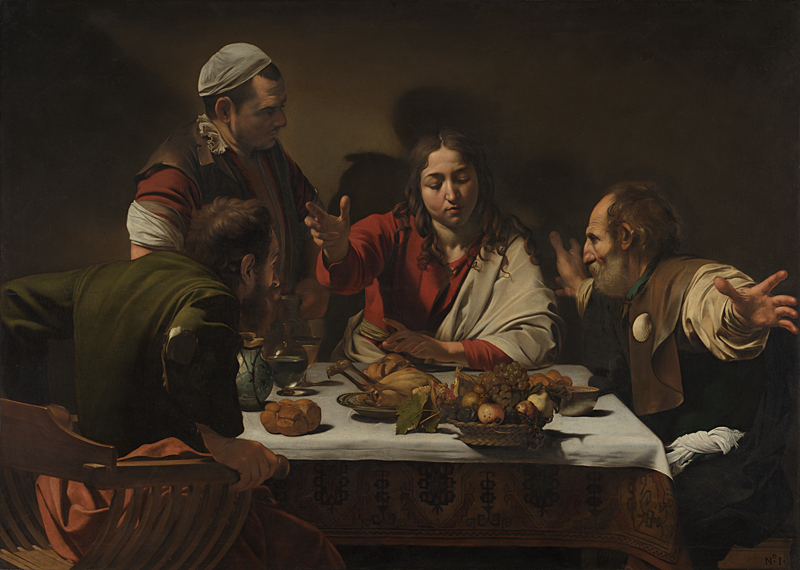
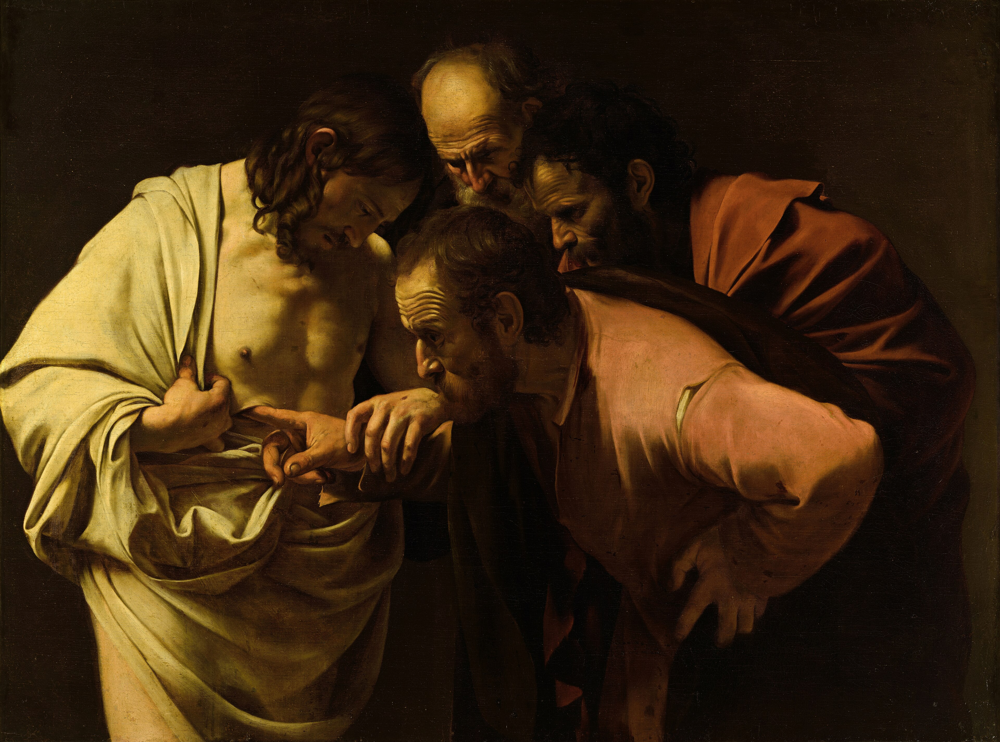

Writings
My Personal Religious Journey
Introduction
This is a graph of $y = e^x$, an exponential function which grows, well, exponentially, the farther you move to the right. Once it crosses $0$, it rapidly climbs into almost a straight line (not actually, but it appears that way), yet all of that emerges from a slight slope. That is a good representation of my experience of transitioning from Christianity to agnosticism: small revelations that built upon each other towards an exponential torrent of doubt and eventual loss of faith. I could go on a whole lengthy 600-page diatribe about why I think the Bible and all human religions aren’t factually true (some may say this is a version of that), but that wouldn’t be very enlightening because my belief in that is all built on the foundational principles I discovered at the beginning of my journey.
I should be clear, first of all: I am an incredibly analytical person. I think in terms of logic and realism and not with my emotions (most of the time). This means that what may make sense to me may not hold the same weight for someone else, and that’s fine; I’m describing my journey, after all. It is also notable that because of how rigid the version of Christianity I was raised in was, it could not adapt to my new beliefs, which made me less inclined to attempt to hold onto it longer. Had I been raised in a more flexible form of Christianity, things may have turned out differently—who knows?
It is also probably good to state beforehand that if you read this and find that I’m criticizing your beliefs, please do not take that as a personal attack by me against you. I am working through the ideas that made me transition to agnosticism and then solidify in my beliefs, not citing the reasons I specifically hate you.
There are going to be a lot of footnotes because I want to keep the core paragraphs fairly clean while leaving the extra stuff at the end in the footnotes. Another note: whenever I cite Bible passages, they are going to be from the ESV Bible.
The Origin of Sin
I vividly remember when I was 16, I asked myself: where did sin come from? The natural answer is Satan.[1] No, before that. With most Christians, the logic of sin begins in the garden of Eden with the Biblical narrative itself, but I looked further back to core questions, like: how was Satan even corrupted/sinful in the first place? By my own logic, if God wanted to create perfect beings with no blemish or flaw, he could do so, being the omniscient, omnipotent being he is. Yet Satan fell, tricked Adam and Eve, and here we are. When I thought about this initially, I came to the realization that for me, the natural conclusion was that God created or altered Satan in a way that made him sinful, despite the fact that God would not only have known what he was doing while doing so, but would have also comprehended the consequences of doing so, and carried on doing it regardless. Now this speculation relies on a few things, namely:
- God intended creation to be without sin entirely.
- That “perfect” beings who have free will can still be perfect within the framework of Christian philosophy.[2]
- That God and what he created are the only things that exist in reality, and that no external forces outside of God and his creation exist or were capable of tampering with creation.[3]

While in my current worldview I believe this is a logical hole that is an example of the Bible’s core logical flaws, I understand that this can be easily remedied by a lot of different philosophies in Christianity, like God wanted to give humans free will,[2] and that required introducing them to the ability to choose between obedience and disobedience to God. I understand that posing this “conundrum” isn’t a definitive checkmate to Christians, but for what I believed at the time I asked it, it was enough to get me thinking and start scrutinizing core tenets of the faith I was raised in.
Now that we got the line off the ground in terms of the graph, where do we go from here? Once you notice a foundational problem in something you had previously assumed to be rock solid, you begin to check all of its parts for other defects you might have missed. This is when I started to think about how comedically theatrical it was that all death and suffering had come from Eve and Adam eating a fruit from a conveniently placed tree “Of the Knowledge of Good and Evil”. Within the biblical narrative, as far as I’m aware, the tree serves literally no practical purpose other than as a convenient narrative mechanism to trigger the fall of man.[4] Realizing this was such an important step because it framed a core Biblical point as a literary device instead of something that unquestionably existed without precedent or purpose for some divine reason.
It was this kind of realization, of the whimsical “fantasy” of it all, that made me scratch my head. Had no one really asked about whether there was any undeniable proof or Egyptian records of the plagues or their army and Pharaoh being swallowed by the sea? Had no one ever looked to see if any accounts of Jesus’ resurrection and ascension existed outside of the Bible? Josephus, Pliny the Younger, and Tacitus said he existed, but other than that we have no historical corroboration of any of the supernatural events involving Jesus outside of the Bible and various non-canonical Christian works (like the Gospel of Thomas). How did Noah get a pair of every species of animal onto the ark if undoubtedly there were some who were surrounded by oceans and couldn’t swim their way to Mesopotamia to get on board? How did humans populate the Earth without horrible defects due to incest?[5] This is essentially a lengthy chain of criticisms of the Old Testament’s theatrical events and their sort of “playground fantasy” tone, which of course makes total sense if you believe the whole thing, but again, this is from the standpoint of 16-year-old me, who, noticing one crack, has begun to look for others.
Predestination
(Sorry Mom)
I saved this part for its own section because it goes over a core tenet of the Dutch Reformed (often referred to as Calvinist) denomination of Christianity (what my parents are and what I “was”): predestination. Predestination states that because God is omnipotent, omniscient, and has unconditional divine sovereignty (total control of the universe in all its facets), it logically follows that he has predestined every soul to its final “eternal destination” before time began. Predestination makes sense in an abstract, isolated system, but when you assess its real-world implications, it starts to become quite scary. Predestination implies (in my mind) that:
- God predestined a substantial portion of all humans to ever exist to be sent to hell before there was even a reason to send them there.[6]
- This basically reduces human free will to an illusion. You can read footnote 7 for an elaboration on this,[7] but suffice it to say that, in my opinion, an individual cannot possess enough moral agency to warrant eternal damnation if their eternal destiny and nature were completely scripted prior to their existence.
- Every good or bad event to ever happen has its causal roots in God’s initial predestination decree. This can be explained away by the “part of his mysterious plan” rhetoric, but it still forces one to admit that God is directly or indirectly responsible for every atrocity ever committed.[8]
My conclusion after exploring what I believe to be the logical consequences of predestination was:
If that is what the Christian God is, I don’t want to ever serve him, even if he is real.

So despite my brief attempts to salvage my faith by adopting more elastic theologies, the horror of the Calvinist God haunted me. I feel that in the end it is what led me to fully lose my faith, because I could not shake the feeling that its conclusion about an omnipotent God was correct: that by logical necessity, such a god would possess the ability to see and be throughout all of time instantaneously, and therefore either foresee or orchestrate all events before they occur.
I understand that this is not what most Christians believe; the issue is that in my mind, even now, if the biblical God was in fact real, I feel that it would make the most sense for predestination as a concept to be true. Predestination and its consequences mattered so much to me not just because it was what I grew up being taught, but because of how I found myself logically digesting the Christian God. If I believed that he was real, I would also have to believe predestination was real, due to my own internal logic and philosophy. This was, in retrospect, the final “nail in the coffin”. I had already become wary of Christianity, and my conclusion that believing in it would necessitate believing in a God who would banish billions to hell before they were even born for what I believe to be the stupid reason of “Humans deserve it, I’m being nice by letting some of you into heaven in the first place” made me vehemently detest the biblical God.[9] This detestation made it much easier going forward to accept ideas undermining the argument for his existence.[10]
The New Testament and Empathy
Eventually, I came to view the Old Testament as a fable—an archaic product of its time, with God’s actions and morality reflecting that. Jesus? He’s cool; heaven is still maybe-kind-of-possibly real… maybe? I very briefly entered a stage of Christian humanism, following Jesus as an example but disregarding the Old Testament. This lasted for a very short time. There wasn’t a real definitive “Holy Shit” moment with this iteration of my rapidly deteriorating Christian faith; it kind of just vanished after maybe a week or two.

During that time, I had essentially cut out most of the books in the New Testament except for the four gospels. I never understood the argument for the legitimacy of Paul’s writings as being canonically biblical. A point I remember dwelling on a lot in this time was the Incident at Antioch (Galatians 2:11–14), where the apostles Paul and Peter disagreed about the distinction between Jews and Gentiles. This is part of a wider, fairly recent reappraisal of Paul and his teachings (James Dunn and Ed Parish Sanders were influential to me in terms of this new narrative surrounding Paul early on). The inherent disagreement between Peter and Paul confused me greatly because of how much unity the early church had been portrayed to me as having during the writing of the New Testament.[11] I think this schism caused by the different views of Paul and Peter helped me view the New Testament and its authors in a less romanticized way. I pivoted towards viewing them as products of history which happen to be treated as holy texts.
A year or two later, I was having a discussion with a family friend who is an ordained minister. I asked how he knew that the New Testament canon was established according to the will of God, and not subject to the folly of man. To paraphrase myself: “How do you know that the people at gatherings like the Synod of Hippo didn’t make a mistake?” He told me he had faith that God worked through those men, through scripture’s self-authenticating nature as well as with the guidance of the Holy Spirit.
I guess it is no surprise that my later liturgical criticisms were mostly based on this faith in momentary periods of uninterrupted “holy guidance” of men to make divinely inspired decisions on textual boundaries, liturgical frameworks, and theological canons. This faith in God’s intervention is necessary if one is to not admit that these councils created arbitrary rules and rituals that were a reflection of their time and their personal beliefs, and not the will of God.
I then realized that if this was the case, then Protestantism functioned on a highly fragile yet paradoxically strong system of trust in men who existed after the apostolic period. This is important because in many conservative traditions cessationist lines of thought are broadly accepted. If we follow the logic of cessationism, there would not have been any extraordinary or divine acts to influence the councils’ behavior on behalf of God’s will, besides that of the Holy Spirit, which is a great segue into:
The Holy Spirit and the Soul are some of the most intriguing (to me) topics to discuss with Christians, because the existence of the soul and the Holy Spirit cannot be definitively proved.[12] I sometimes find myself frustrated with such things because I view them as a confusion between divine influence and emotion. When people said “God called them” to do a specific thing, I began to feel that what had truly occurred was that they used the concept of the Holy Spirit to defy empirical verification and give credence to their own confirmation bias.[13]
However, to illuminate the lines between the Holy Spirit, emotion, consciousness, and personal desires would be to reveal (in my opinion) a damning use of the Holy Spirit[14] to justify subconscious ambitions (or conscious, you never know) to grant them divine legitimacy in what they are doing. Confronting such a thing is an identity crisis-inducing moment; it would destabilize someone’s internal consistency so much that I can’t help but feel empathy for the person whom I have only hypothetically imagined.
I came to realize things as I probed my own behaviors from a psychological and scientific perspective. Unrelated meditations on trying to understand my own subconscious motivations and reasoning led me to form my theory on the “Holy Spirit”, as many Christians would call it. As I thought about it more, I slowly understood that maybe Christianity was more of an attempt to explain reality than I had realized.
I delve into this more in Section Section 8 (Prayer), but this was a significant step in my personal journey from having a cynical, frankly childish view of Christianity and Christians in general, towards having a more empathetic and accepting one. Despite the disagreements and my maintained belief in the absurdities of scripture, I started to realize just how much it meant to people and how it was tied directly to many people’s identities. A pivotal part of this realization is when I was in a religious argument with my mom: I berated her with questions and insulted the biblical God, and she became very emotional. I paused. My mom, the most important person in my life whom I love endlessly, was becoming emotional at my attack of her faith. It was in this moment that my model of the separation between a person and their religion shifted irreparably (for the better, I might add). I honestly look back on this moment and am disgusted by myself; I was so naive and not empathetic in the slightest.[15]
While the New Testament is more forgivable in its spectacle and moral implications, it still has the fundamental flaw of being a religious text. And more and more, I had begun to view religion from an outside perspective. The customs, pageantry, and tradition all began to look so silly and somewhat self-serving after their cloak of higher purpose had been taken off. Don’t get me wrong, humans do that for things that are not just religious in nature, but when I looked at the wider world of religion, I realized that all the different sects and belief systems were devout in their faith to something that could not be definitively proven to exist.[16] The Problem of Divine Hiddenness was universal. This was a big moment for me, because it made me realize the instilled exceptionalism I had held in my view of Christianity was false: in an objective context, Christianity is just as absurd as the rest of them.
God's Morality and Bears
If I recall correctly, the first time I ever read 2 Kings 2:23–25 was in the STEM room of my high school in my senior year during physics class. If you don’t know what happens in that passage, please let me do the honor of explaining it to you. Elisha was walking on a road when a bunch of kids (over forty of them) ran up to him and began making fun of him for being bald. Elisha cursed them,
And two she-bears came out of the woods and tore forty-two of the boys.
Now by the time I read this I was already a self-proclaimed agnostic who didn’t believe in the Bible. Even still, this passage took me by surprise with its cruelty, and made me ponder the deep divide between the Old Testament and the New Testament. In my analysis, it seems that there are two possible sources of the bears’ appearance:
- Powers granted to Elisha by God.
- Direct intervention from God.
Either way it does not paint a pretty picture. If we assume the former case, then God’s lack of rebuke towards Elisha for mauling (and possibly killing) 42 boys (or young men, however you want to spin the translation) can be assumed to be a sign of endorsement or indifference. God punished Moses for striking a rock in anger, but not Elisha for siccing two she-bears on a bunch of kids. If the latter case is true, then God himself conducted the act, so his opinion on the use of violence in this case can be effectively confirmed. This led me to look for other examples of God’s cruelty in the Old Testament. I’m just going to quote Deuteronomy 20:16–18 here:
But in the cities of these peoples that the Lord your God is giving you for an inheritance, you shall save alive nothing that breathes, but you shall devote them to complete destruction, the Hittites and the Amorites, the Canaanites and the Perizzites, the Hivites and the Jebusites, as the Lord your God has commanded, that they may not teach you to do according to all their abominable practices that they have done for their gods, and so you sin against the Lord your God.
Very interesting indeed. God ordering a genocide doesn’t necessarily strike me as a morally upright figure. For if we attempt to justify God’s actions here, we end up making the concession that at times, extermination of specific peoples based on their religion (or ethnicity) is morally acceptable. Of course it is only so when God commands it, but then where is that line drawn? Is this declaration of war brought against people groups arbitrarily, or can it be deduced to a specific requirement? Divine Command Theory posits that any act which God commands one to do is inherently morally good. This begs the question, though, that Plato writes in the iconic Euthyphro Dilemma:
Is the pious loved by the gods because it is pious, or is it pious because it is loved by the gods?
If one believes in the former (Divine Command Theory), then every possible command issued by God must be good even if scripture itself condemns it. If one believes in the latter, however, it is essentially an admission that God commands an action because it is good, and therefore is inherently adherent to a moral principle or law which limits his sovereignty and brings his title of “omnipotent” into question. There are thought-provoking rebuttals to the Euthyphro Dilemma, particularly William Alston’s, but once again I use this as an example of the growing distance I felt from the idea of a “morally and logically consistent” Christian doctrine as time passed.[17]
Divine Mechanics

I started to ask questions about the crucifixion near the end of my faith. I began critically thinking about the New Testament instead of having the focus of my critical thought be on the Old Testament exclusively. My main quarrel with the crucifixion has never been the Trinity as a concept or its progression as a story, but with its implications about “divine mechanics” as I call it. If we are to assume the theory of penal substitutionary atonement, Jesus died on the cross as the ultimate sacrifice so humans would no longer have to make sacrifices to appease God.
I found it odd that in order to pay off a spiritual debt one would need to make a physical sacrifice. If God was immaterial and omnipotent, why would he require a material sacrifice to grant a pardon from sin? I feel that one conclusion is that God himself is bound to external laws which establish the necessity of such a ritual. I found that there is a weird theme in the Bible of God seemingly having limits on what he is capable of doing for reasons that are never clearly illustrated. However, these limits usually tend to give priority to the poetic nature of the narrative, which is not a favorable look for a text whose legitimacy is at the center of my doubts.
The necessity of the crucifixion itself is an interesting concept to ponder. For if God is omnipotent, he would have no need to sacrifice himself as a man to solve the problem of sacrifice. An analogy I felt was apt for how I view the confusing nature of the crucifixion is this:
A kid on the playground keeps poking you with a sharp stick. His stated reason for doing so is: “You exist.” But one day, after he has poked you incessantly for as long as you can remember, he decides to make the ultimate sacrifice by poking himself with the sharp stick. He explains his action as being for your benefit, because now that he has poked himself with the stick, there is no longer any need to poke you.
A functional framing of this entire situation excludes the symbolic meaning from being the core reason behind the crucifixion. After already illustrating my feelings on other aspects of Christianity, I think I can succinctly say that if the crucifixion is primarily symbolic, then its mechanics were arbitrary. If the primary purpose was functional, however, then this imposes an interesting limit on God’s sovereignty in my eyes because…
Why hadn’t God forgiven humanity and eradicated sin entirely? He was most definitely not lacking the means to do so. Why had he promised the second coming instead of immediately delivering it? This goes right back to the core problem of deciding between whether God prioritizes free will despite acting as an example of free will without sin, or acknowledging his allowed extension of the total amount of human suffering with each second the Second Coming does not arrive. Early church history paints a picture of Christ’s return occurring soon,[18] a theme that is still interestingly present in many Christians’ beliefs despite two thousand years of silence. In my eyes it makes sense that the narrative’s ultimate conclusion (the second coming) has been indefinitely shifted into the future to reflect lived reality.
I have heard a few arguments about “patient grace”, a concept in which God has delayed the second coming in order to give sinners time to repent. This view is somewhat incompatible with Calvinist thinking: if God predestined the elect’s eternal home in a sequence of logical decisions made before any humans existed, it would be a little cruel to feign waiting for sinners to convert when those who will be saved have already been decided. Patient grace is a viewpoint that is strongly tied to free will, and as I’ve discussed that already I’ll spare repeating myself. In essence, my opinion on patient grace is that it is a necessary explanation that makes logical compromises elsewhere to preserve the general “goodness” of God.
New Identity

I began to see that people were religious for a myriad of reasons, and none of those reasons was because they had irrefutable evidence that their divinity is real. Of course there are numerous anecdotal conversion narratives which say otherwise; examples include The Case for Christ and Seeking Allah, Finding Jesus, which I read both before and after I became agnostic. None of their reasoning really held any weight with me.
I always felt that despite the factual bravado or recollections of dreams and visions, many of their conclusions relied on motivated reasoning. It seemed to me that the arguments many authors lay out are usually retrospective justifications for their affective bias. I recall reading The Reason for God in my senior year high school apologetics class, and being struck by how benign the reasoning behind each argument was. The purpose I feel that book serves is for patient reassurance of doubting Christians rather than an appeal to the skeptic.
Setting books aside, by this point I had essentially abandoned my faith in every way except socially. I half-heartedly went through the motions, called myself “Christian” to those I didn’t trust very much, and would pretend to be in agreement in passive conversations. During COVID I decided I had had enough of living a double life and told my parents I wasn’t a Christian anymore. At that time I don’t think they took me too seriously (I don’t know if I can blame them in all honesty), but over time they’ve realized my conviction was not just a phase. Of course my general beliefs about religion and the world were naive, even when I think I was on the right track.
I initially had a substantial distaste for Christianity, which was more reactive than logical. My behavior stemmed from my disagreements with conservative Christians I knew. I viewed their beliefs as regressive and harmful to society, and resented them for it. While this still may be true in a way, it took me some time to really come back around to empathizing with the Christians around me.
I understand why I had so much resentment, but in the end I needed to learn that I should treat people with respect regardless of their religious affiliation or core social beliefs. My friends and family were Christian, and I loved them, and I liked them as people, yet in my cynical naïveté as a newly converted nihilist I saw them all as “stupid sheep”. This conflict resulted in my coming to terms with my dislike of Christianity’s beliefs in favor of respecting the dignity of the Christians in my life.
To strengthen my perspective and find ways of defending myself in debates I turned to reading. The first book I read was Zealot: The Life and Times of Jesus of Nazareth. I like this book; I think Reza Aslan is a good writer, but I understand it should not be the definitive source of a historical perspective on Jesus. I also read A History of the Bible: The Book and Its Faiths by John Barton and The Triumph of Christianity: How a Forbidden Religion Swept the World by Bart Ehrman. Both of these books are written by respected academics, but I also read more inflammatory polemics like The Founding Myth: Why Christian Nationalism Is Un-American by Andrew Seidel. As time passed, my interests moved on to science, engineering, math, history, economics, psychology, and philosophy. I feel that my broadening pool of interests in this time of my life made me a stronger skeptic. It showed me how much I valued internal consistency and empirical grounding as a person and in what I believed.
Prayer
Prayer is an odd one, because it is so ubiquitous in so many religions, especially (in my mind) with Christianity. Yet despite the Bible’s (mostly the New Testament) and evangelists’ incessant browbeating to pray, pray, pray, I found that at least to me, it did not make a lot of sense philosophically. I found it to be incoherent in the framework of classical theism. Assuming God’s omniscience, omnipotence, and the execution of a divine plan, petitionary prayer becomes effectively redundant. An all-knowing God is not going to alter an optimal plan to accommodate the desires of a mortal creature. Even when we set aside predestination, treating prayer as a way to influence God is like a folkloric element akin to a wishing well. The prevalence of the Texas sharpshooter fallacy and confirmation bias when people discuss prayer always bothered me. Quick to forget unanswered prayers, many declare divine intervention once a prayer is “answered”, with what I imagine would be the same consistency as the aforementioned wishing well.
However, my early cynicism turned into compassion, because I realized that prayer is a form of therapy. It functions as a form of self-regulation that allows you to voice your worries to a benevolent listener who is always there. Such a practice provides comfort, structure, and emotional release to many who may not have outlets for that outside of prayer.
I used to defiantly keep my eyes open and not bow my head when my parents would pray, but now I do—not in reverence to a God I don’t believe in, but out of respect and love for my parents and how much prayer means to them.
Now
Where am I now? I’m agnostic, meaning I don’t definitively believe a higher power doesn’t exist, but if one does, I am highly skeptical that such a being resembles the traditional God of the Bible. I don’t adhere in my life to strict nihilism because I think life is beautiful and its purpose can be up to the individual to decide. Despite there being no overarching “purpose” that I believe in, I still feel fulfilled in the life I live because I set my own goals to match what I want to do in the world and society I live in.
I believe that as a human I am limited in what I can understand about the universe; despite the use of logic I inevitably will be wrong. So in a way, my criticism of the appeal to mystery is hypocritical. But despite acknowledging the fallibility of my beliefs, I still try my best to pursue truth. I feel where I differentiate myself from the Christian adherents to the appeal to mystery is that I am capable of admitting my core doctrine (whether that be science, philosophy, or whatever else I utilize) is neither perfect nor definitively complete. This is self-evident in fields such as physics where Quantum Mechanics and General Relativity remain irreconcilable, but I believe it should hypothetically apply to everything, although questioning the validity of everything is hardly practical. There are things we haven’t devised ways to investigate (and may never do so), like the ultimate nature of the electromagnetic field, what gravity truly is, etc.
When it comes to the uniqueness of Earth and its Goldilocks zone, I tend to align with the Anthropic Principle: despite the rarity of Earth, any universe or planet that is uninhabitable has no conscious life to observe its uninhabitability. The capacity to observe the uniqueness of a habitable universe is solely reserved for those beings who actually live in one. The universe and Earth can cultivate life because if they couldn’t, we wouldn’t exist or be able to observe that absence in the first place. Therefore, the only universe and planet which intelligent life is able to observe is one that allows for its existence. I prefer this explanation to the idea of intelligent design.
In my view, morality is not a definitive overarching divine force, but rather a subjective construct forged by people. Does that mean that morality is arbitrary and doesn’t matter? Absolutely not. I live in a society with other people, and I am an empathetic person, so despite my core belief that the universe lacks a built-in moral axis, the ethics we humans have developed do not need to be a universal cosmic law to be something worth striving to live by. I understand how it feels to have pain inflicted on me by others, and I understand fear. I understand how unpleasant these things are, and because I recognize that other people are conscious beings like me (an axiom I can’t empirically prove, but assume nonetheless), I refuse to inflict what I know would cause suffering or deprive someone of something precious (such as their life), because I would not wish that upon myself. This establishes the framework of social reciprocity, demonstrating how even purely altruistic acts are rooted in our shared human condition.
Where did everything come from? I don’t know. The Big Bang makes sense when you examine the astrophysics, but I don’t know what preceded it. I admit ignorance! While many religious people take this cosmological gap to argue that the universe’s construction points to their specific deity, I might be inclined to consider the premise if the scriptures associated with those claims were historically and logically credible to me. Alas, I have yet to find such a text. I want to reiterate that while I do accept the Anthropic Principle, that does not mean I have dogmatically ruled out the possibility of a higher power. My interpretation of the Anthropic Principle does not endeavor to explain the ultimate source of the cosmos, but rather explains its apparent fine-tuning within a broader observational context. Perhaps the universe was indeed designed intelligently.
Conclusion
For my high school yearbook, each senior was asked to pick a Bible verse that they wanted to be paired with their senior photos. I picked 1 Corinthians 3:18:
Let no one deceive himself. If anyone among you thinks that he is wise in this age, let him become a fool that he may become wise.
I picked that verse (out of context) because I wanted to convey a core philosophy I had learned by the time I graduated: that no matter how content you feel in your understanding of life, God, the universe, or whatever else, you are probably wrong. That’s just part of being human. In the end, it is neither the Christian nor the atheist that I dislike; it is the person who, in their arrogance, thinks they have nothing left to learn. And I think that’s why I love being agnostic so much, that I can more easily accept I’m wrong and learn from it than I could when I was a Christian.